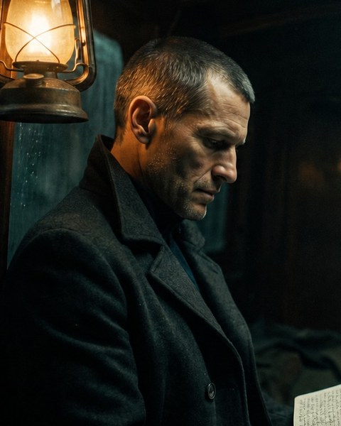

Chris
Agente do NIL

Depois dos Portões, Chris e Reeves embarcam no St. Irvine e encontram Digor à espera. O que deveria ser uma operação a bordo de um navio se complica quando corredores, vozes e passageiros deixam de obedecer à lógica.

Texto integral do capítulo a inserir.